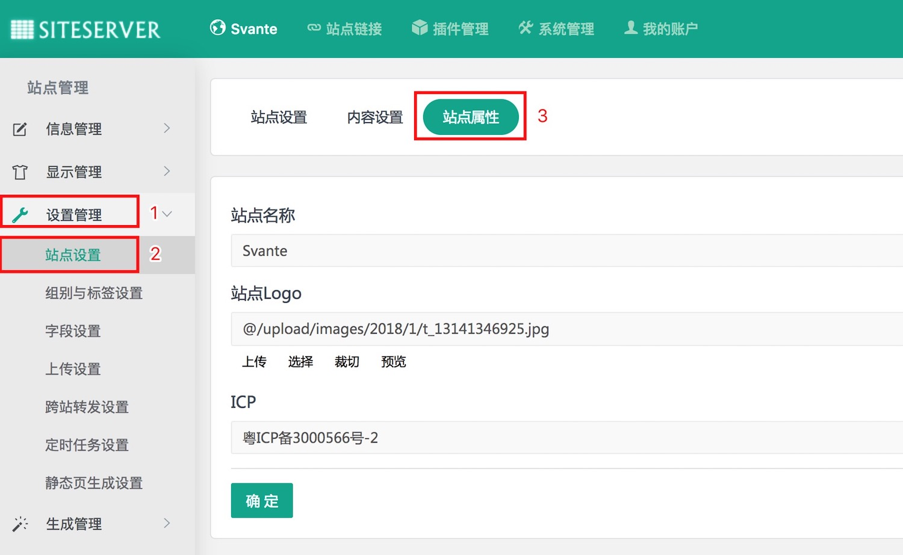

在切换到正确站点之后，点击设置管理--->站点设置，在右边出来的站点设置界面上再点击站点属性选项卡，进入站点属性界面，如下图所示：

SiteServer CMS 系统某个具体站点相关的常规属性都在此设置，比如站点名称、站点Logo、站点ICP备案号等。
修改好相应字段后点击确定按钮即可完成站点相关信息的修改。
特别注意：如果修改完了想在前台浏览页面看修改效果，那么在浏览前台页面之前需要进行生成页面，否则无法看到修改后的效果。